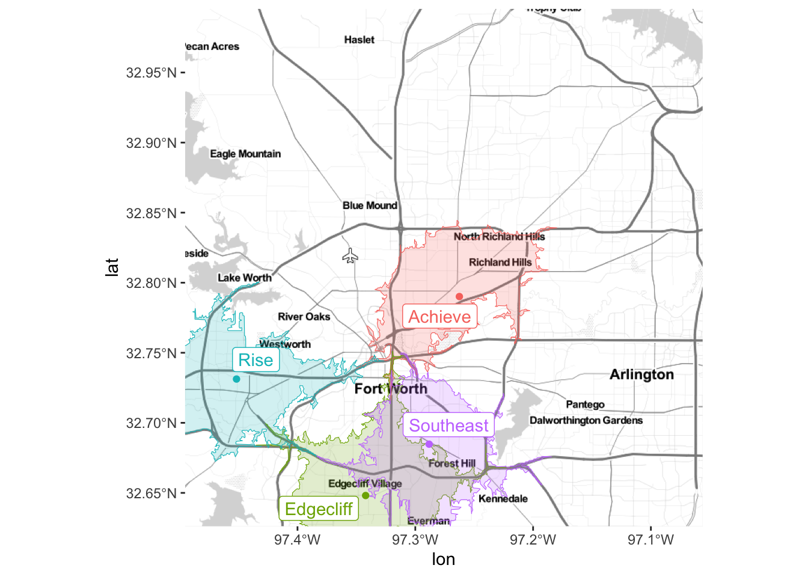
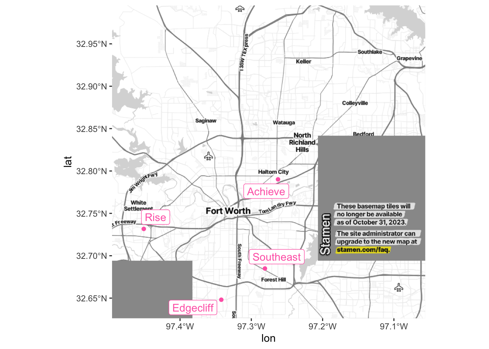
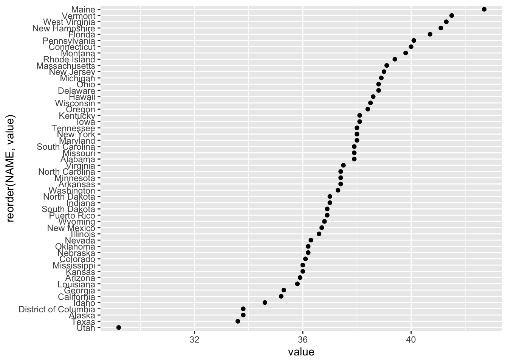
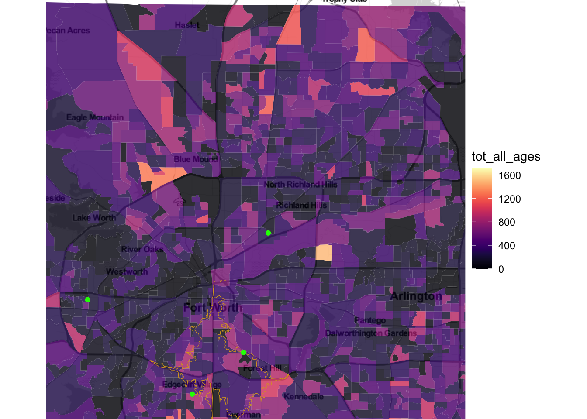

11 Geospatial Methods and GIS
This chapter provides a gentle introduction to Geographic Information Systems (GIS) in R with simple features.
11.1 What is a simple feature?
Simple Features is a set of ISO and Open Geospatial Consortium (OGC) standards that specify a common storage and access model of geographic feature made of mostly two-dimensional geometries (point, line, polygon, multi-point, multi-line, etc.) used by geographic information systems. Simple features underlie the most common commercial and open-source GIS platforms (e.g., ESRI ArcGIS, PostGIS, the GeoJSON standard).
A feature is essentially a thing in the world. In the simple feature specification a feature has a geometry describing where on Earth the feature is located, and they have attributes, which describe other properties, like names or metrics such as population.
11.1.1 How are simple features implemented in R
In a word, simply. A special feature in R is essentially a row in data.frame with class sf. This data.frame will have the normal suspects—names of things, metrics you care about—in columns and then a special column named geometry or geom. This will typically be a list-column, meaning that instead of holding characters or numbers, the contents are a list and each list is collection of 2-d coordinates that describe how to plot or draw the geometry. The image below illustrates the structure of an sf data.frame

11.2 Let’s look at TACO schools
Let’s start by getting schools in Tarrant County (TACO). We can get these schools and their addresses from the data warehouse:
#library(tidyverse)
#library(ideadata)
# schools_conn <- get_schools()
# regions_conn <- get_regions() %>%
# filter(RegionDescription == "Tarrant County") %>%
# select(RegionID)
# taco_schools <- schools_conn %>%
# inner_join(regions_conn, by = "RegionID") %>%
# select(SchoolShortName, SchoolStreet, SchoolCity, SchoolState, SchoolZipCode) %>%
# distinct() %>%
# collect() %>%
# janitor::clean_names()
#taco_schools
#save(taco_schools, file = "./taco_schools.Rda")
load("./taco_schools.Rda")
taco_schools
#> # A tibble: 4 × 5
#> school_short_name school_street school_city school_state
#> <chr> <chr> <chr> <chr>
#> 1 Achieve 1900 Thomas Rd Haltom City TX
#> 2 Edgecliff 1640 Altamesa … Fort Worth TX
#> 3 Rise 3000 S Cherry … Fort Worth TX
#> 4 Southeast 2935 E Seminar… Fort Worth TX
#> # ℹ 1 more variable: school_zip_code <dbl>11.2.1 Geocoding
We’ve got schools and addresses! But that isn’t sufficient to plot these schools on a map, and we certainly don’t have a simple features data.frame.
The first stop is geocoding these addresses, which is simply getting their latitude and longitude. Doing so is very straightforward for with the [tidygeocoder](https://jessecambon.github.io/tidygeocoder/) which provides a great interface to a number of different geocoders (e.g., US Census, OpenStreetMaps, geocod.io).
library(tidygeocoder)
taco_schools_geocoded <- taco_schools %>%
tidygeocoder::geocode(street = school_street,
city = school_city,
state = school_state,
postalcode = school_zip_code,
method = "osm")
#> Passing 4 addresses to the Nominatim single address geocoder
#> Query completed in: 4.1 seconds
taco_schools_geocoded
#> # A tibble: 4 × 7
#> school_short_name school_street school_city school_state
#> <chr> <chr> <chr> <chr>
#> 1 Achieve 1900 Thomas Rd Haltom City TX
#> 2 Edgecliff 1640 Altamesa … Fort Worth TX
#> 3 Rise 3000 S Cherry … Fort Worth TX
#> 4 Southeast 2935 E Seminar… Fort Worth TX
#> # ℹ 3 more variables: school_zip_code <dbl>, lat <dbl>,
#> # long <dbl>Brilliant! We’ve got lat and long variables for those addresses. Super Cool!
Let’s transform these now to a sf object:
library(sf)
#> Linking to GEOS 3.11.0, GDAL 3.5.3, PROJ 9.1.0; sf_use_s2()
#> is TRUE
taco_schools_sf <- taco_schools_geocoded %>%
st_as_sf(coords = c("long", "lat"))
taco_schools_sf
#> Simple feature collection with 4 features and 5 fields
#> Geometry type: POINT
#> Dimension: XY
#> Bounding box: xmin: -97.45087 ymin: 32.64811 xmax: -97.26259 ymax: 32.79013
#> CRS: NA
#> # A tibble: 4 × 6
#> school_short_name school_street school_city school_state
#> <chr> <chr> <chr> <chr>
#> 1 Achieve 1900 Thomas Rd Haltom City TX
#> 2 Edgecliff 1640 Altamesa … Fort Worth TX
#> 3 Rise 3000 S Cherry … Fort Worth TX
#> 4 Southeast 2935 E Seminar… Fort Worth TX
#> # ℹ 2 more variables: school_zip_code <dbl>,
#> # geometry <POINT>Notice that the lat and long variables are replaced by the geometry column.
11.2.1.1 Coordinate Reference System
Notice in the meta-data above that CRS is NA. CRS refers to the Coordinate Reference System, which is a framework for measuring locations precisely as coordinates. A CRS includes a coordinate system, a horizontal datum that binds the coordinates to a real space on the spheroid Earth with an estimate of the Earth’s curvature and a set of control points, and finally a projection that converts spherical coordinates to Cartesian coordinates.
You should always set this and the most common CRS in latitude and longitude as WGS84 (used by the GPS satellite navigation system) with the following CRS string "+init=epsg:4326" as a formal identifier, but also more simply by its name:
st_crs(taco_schools_sf) <- "WGS84"11.2.2 Plotting
We now have enough information to draw a map!
#renv::install("yutannihilation/ggsflabel")
library(ggmap)
#> The legacy packages maptools, rgdal, and rgeos, underpinning the sp package,
#> which was just loaded, were retired in October 2023.
#> Please refer to R-spatial evolution reports for details, especially
#> https://r-spatial.org/r/2023/05/15/evolution4.html.
#> It may be desirable to make the sf package available;
#> package maintainers should consider adding sf to Suggests:.
#> ℹ Google's Terms of Service: <https://mapsplatform.google.com>
#> ℹ Please cite ggmap if you use it! Use `citation("ggmap")` for details.
#>
#> Attaching package: 'ggmap'
#>
#>
#> The following object is masked from 'package:tidygeocoder':
#>
#> geocode
base_google_map <- get_googlemap("76117", zoom = 11)
#> ℹ <https://maps.googleapis.com/maps/api/staticmap?center=76117&zoom=11&size=640x640&scale=2&maptype=terrain&key=xxx>
#> ℹ <https://maps.googleapis.com/maps/api/geocode/json?address=76117&key=xxx>
base_google_map %>%
ggmap() +
geom_sf(data = taco_schools_sf, color = "hotpink", inherit.aes = FALSE) +
ggsflabel::geom_sf_label_repel(data = taco_schools_sf,
aes(label = school_short_name), color = "hotpink",
inherit.aes = FALSE)
#> Coordinate system already present. Adding new coordinate
#> system, which will replace the existing one.
#> Warning in st_point_on_surface.sfc(data$geometry):
#> st_point_on_surface may not give correct results for
#> longitude/latitude data
I don’t always love Google Maps’ look for display purposes on slides, so let’s change that up with Stamen Maps:
# Need a bounding box for the get_stamenmap function
bbox <- bb2bbox(attr(base_google_map, "bb"))
base_stamen_map <- get_stamenmap(bbox, zoom=11, maptype = "toner-lite")
#> ℹ Map tiles by Stamen Design, under CC BY 3.0. Data by OpenStreetMap, under ODbL.
base_stamen_map %>%
ggmap() +
geom_sf(data = taco_schools_sf, color = "hotpink", inherit.aes = FALSE) +
ggsflabel::geom_sf_label_repel(data = taco_schools_sf,
aes(label = school_short_name), color = "hotpink",
inherit.aes = FALSE)
#> Coordinate system already present. Adding new coordinate
#> system, which will replace the existing one.
#> Warning in st_point_on_surface.sfc(data$geometry):
#> st_point_on_surface may not give correct results for
#> longitude/latitude data
11.2.3 Getting drive times
This requires the MapBox API, which requires an API key.
#install.packages("mapboxapi")
library(mapboxapi)
#> Usage of the Mapbox APIs is governed by the Mapbox Terms of Service.
#> Please visit https://www.mapbox.com/legal/tos/ for more information.
drive_10min <- mb_isochrone(taco_schools_sf,
profile = "driving",
time = 10)
schools_drive_10min_sf <-drive_10min %>% bind_cols(as_tibble(taco_schools_sf) %>% select(-geometry))
base_stamen_map %>%
ggmap() +
geom_sf(data = schools_drive_10min_sf,
aes(color = school_short_name,
fill = school_short_name),
alpha = .2,
inherit.aes = FALSE) +
geom_sf(data = taco_schools_sf,
aes(color = school_short_name),
inherit.aes = FALSE) +
ggsflabel::geom_sf_label_repel(
data = taco_schools_sf,
aes(label = school_short_name, color = school_short_name),
inherit.aes = FALSE) +
guides(fill = "none", color = "none")
#> Coordinate system already present. Adding new coordinate
#> system, which will replace the existing one.
#> Warning in st_point_on_surface.sfc(data$geometry):
#> st_point_on_surface may not give correct results for
#> longitude/latitude data
#> Warning in st_point_on_surface.sfc(data$geometry):
#> st_point_on_surface may not give correct results for
#> longitude/latitude data
#> Warning in st_point_on_surface.sfc(data$geometry):
#> st_point_on_surface may not give correct results for
#> longitude/latitude data
#> Warning in st_point_on_surface.sfc(data$geometry):
#> st_point_on_surface may not give correct results for
#> longitude/latitude data
11.2.4 Some geographic filtering
sf_use_s2(FALSE)
#> Spherical geometry (s2) switched off
taco_area_of_max_intersection <- schools_drive_10min_sf %>%
filter(school_short_name == "Edgecliff") %>%
st_intersection(schools_drive_10min_sf %>% filter(school_short_name == "Southeast"))
#> although coordinates are longitude/latitude,
#> st_intersection assumes that they are planar
#> Warning: attribute variables are assumed to be spatially
#> constant throughout all geometries
base_stamen_map %>%
ggmap() +
geom_sf(data = taco_area_of_max_intersection,
color = "goldenrod",
fill = "goldenrod",
alpha = .2,
inherit.aes = FALSE) +
geom_sf(data = taco_schools_sf,
aes(color = school_short_name),
inherit.aes = FALSE) +
ggsflabel::geom_sf_label_repel(
data = taco_schools_sf,
aes(label = school_short_name, color = school_short_name),
inherit.aes = FALSE) +
guides(fill = "none", color = "none")
#> Coordinate system already present. Adding new coordinate
#> system, which will replace the existing one.
#> Warning in st_point_on_surface.sfc(data$geometry):
#> st_point_on_surface may not give correct results for
#> longitude/latitude data
#> Warning in st_point_on_surface.sfc(data$geometry):
#> st_point_on_surface may not give correct results for
#> longitude/latitude data
#> Warning in st_point_on_surface.sfc(data$geometry):
#> st_point_on_surface may not give correct results for
#> longitude/latitude data
#> Warning in st_point_on_surface.sfc(data$geometry):
#> st_point_on_surface may not give correct results for
#> longitude/latitude data
And what schools are found in this area?
schools_in_overlap <- st_filter(taco_schools_sf,
taco_area_of_max_intersection,
join = st_within)
#> although coordinates are longitude/latitude, st_intersects
#> assumes that they are planar
#> although coordinates are longitude/latitude, st_intersects
#> assumes that they are planar
schools_in_overlap
#> Simple feature collection with 0 features and 5 fields
#> Bounding box: xmin: NA ymin: NA xmax: NA ymax: NA
#> Geodetic CRS: WGS 84
#> # A tibble: 0 × 6
#> # ℹ 6 variables: school_short_name <chr>,
#> # school_street <chr>, school_city <chr>,
#> # school_state <chr>, school_zip_code <dbl>,
#> # geometry <GEOMETRY [°]>It may look like Edgecliff is within the 10-minute drive time overlap area, but in truth it is just outside of the boundary.
11.3 Census Data
Kyle Walker has written the exceptional [tidycensus](https://walker-data.com/tidycensus/)package, with fantastic documentation, which allows you to pull US Census data sources (including the Decennial Census and the yearly American Community Survey).
Let’s load it up:
#install.packages('tidycensus')
library(tidycensus)
# NEt command saves Census API key to your .Renviron file
#census_api_key("YOUR API KEY GOES HERE")
#census_api_key(Sys.getenv("CENSUS_API_KEY"))11.3.0.0.1 Getting Basic Data
There are two major functions implemented in tidycensus:
-
get_decennial(), which grants access to the 2000, 2010, and 2020 decennial US Census APIs, and -
get_acs(), which grants access to the 1-year and 5-year American Community Survey APIs.
Let’s get median age by state in 2010:
age10 <- get_decennial(geography = "state",
variables = "P013001",
year = 2010)
#> Getting data from the 2010 decennial Census
#> Using Census Summary File 1
age10
#> # A tibble: 52 × 4
#> GEOID NAME variable value
#> <chr> <chr> <chr> <dbl>
#> 1 01 Alabama P013001 37.9
#> 2 02 Alaska P013001 33.8
#> 3 04 Arizona P013001 35.9
#> 4 05 Arkansas P013001 37.4
#> 5 06 California P013001 35.2
#> 6 22 Louisiana P013001 35.8
#> 7 21 Kentucky P013001 38.1
#> 8 08 Colorado P013001 36.1
#> 9 09 Connecticut P013001 40
#> 10 10 Delaware P013001 38.8
#> # ℹ 42 more rowsPlotting is super duper easy:
age10 %>%
ggplot(aes(x = value, y = reorder(NAME, value))) +
geom_point()
11.3.0.0.2 Searching for variables
How, pray tell, does one know that P013001 is the variable for median age? Getting variables from the Census or ACS requires knowing the variable ID - and there are thousands of these IDs across the different Census files. To rapidly search for variables, use the load_variables() function. There are more details on in the package’s documentation page.
To browse these variables, assign the result of load_variables() to a variable and use the View() function in RStudio. An optional argument cache = TRUE will cache the dataset on your computer for future use.
v_2020 <- load_variables(2020, "acs5", cache = TRUE)
#View(v_2020)Let’s get Tarrant county:
11.4 Chloropleth
Now we are summing up all school aged children (5-17 year old boy and girls):

11.5 Dot-density
Areal representation of data suffer from a few problems. One problem is that geographically large areas draw the eye and can often over-emphasize those areas versus smaller geographies. This distortion is familiar to those who follow elections, where geographically large states with small populations, like Wyoming, loom larger than geographically small, but densely populated states, like Delaware (Wyoming has 1/2 the population of Delaware, but 42x the land mass). This distortion occurs with Census geographies because blocks, block groups, and tracts are created to have roughly equal populations (e.g., Census tracts generally have a population size between 1,200 and 8,000 people, with an optimum size of 4,000 people); these geographies are consequently larger in rural places than in urban centers.
A second issue is that it’s very hard to show heterogeneity in spatial distributions. The plot above shows estimates of the count of all children aged 5-17 years in each tract. But, we may be interested in how differently distributed those students are.
A method to remedy both issues is to use dot-density plots which simply plot a sample of points within each geography for each group (often down sampled where each dot represents some number of people (e.g., 20 or 100 persons per dot). It’s pretty straightforward to get what you need by using sf::as_dot_density()
acs_ages <- dplyr::tribble(
~ variable, ~age_range, ~gender,
"B01001_001", "All", "All",
#male
"B01001_004", "5-9", "Male",
"B01001_005", "10-14", "Male",
"B01001_006", "15-17", "Male",
#Femaile
"B01001_028", "5-9", "female",
"B01001_029", "10-14", "female",
"B01001_030", "15-17", "female"
)
tarr_childs <- tarr %>% inner_join(acs_ages) %>%
filter(gender != "All") %>%
select(-variable, -moe, -gender) %>%
group_by(GEOID, NAME, age_range) %>%
mutate(n_children = sum(estimate))
#> Joining with `by = join_by(variable)`
tarr_dots <- tarr_childs %>%
as_dot_density(
value = "n_children",
values_per_dot = 20,
group = "age_range"
)
#> although coordinates are longitude/latitude, st_intersects
#> assumes that they are planar
#> although coordinates are longitude/latitude, st_intersects
#> assumes that they are planar
base_stamen_map %>%
ggmap() +
geom_sf(data = tarr_dots,
aes(color = age_range),
inherit.aes = FALSE,
alpha = .25,
size=.25) +
geom_sf(data = taco_area_of_max_intersection,
color = "goldenrod",
fill = "goldenrod",
alpha = .2,
inherit.aes = FALSE) +
geom_sf(data = taco_schools_sf,
inherit.aes = FALSE,
color = "green",
size = 3) +
theme_void() +
scale_color_viridis(option = "viridis", discrete = TRUE)
#> Coordinate system already present. Adding new coordinate
#> system, which will replace the existing one.